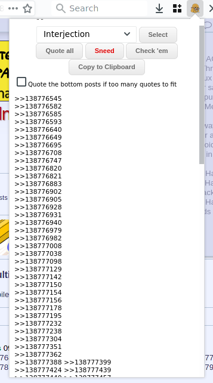
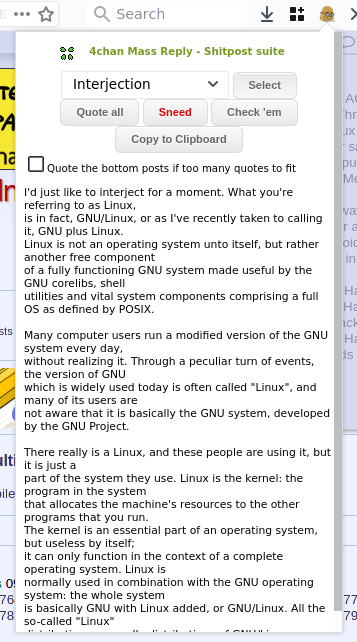

Description
This browser extension aims to facilitate the creation of mass replies on 4chan.org and 4channel.org, and also reply to dubs. It may or may not work on other imageboards. Compatible with desktop Firefox and Firefox for AndroidUsage:
Click on the toolbar icon when in a thread, and select one of three options.- "Quote" quotes all the replies in the thread.
- "Sneed" adds "sneed" at the end.
- "Check 'em" only quotes post with repeating digits.
- "Copy To Clipboard" is self explanatory.
Permissions:
- Clipboard to copy the quotes to the clipboard
- Storage to save the parameter between each use
Source code
Github repository
Screenshots

